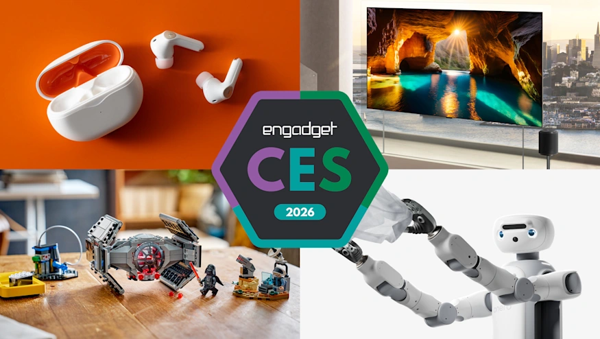

The best of CES 2026
Presenting our 15 winners, plus our best in show award.
Engadget7 hours ago
CES 2026
Latest stories
Latest reviews and guides
Advertisement
Advertisement
Advertisement

Presenting our 15 winners, plus our best in show award.